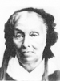
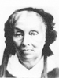
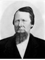

Archibald Waller Overton Buchanan Families
Home
Histories
Charts
Photos
Maps
Restricted
News
Info
Contact
| <--(return)-- |   John Buchanan - Nancy Ann Bach(e) | ----> | 
| Archibald Waller Overton Buchanan - Helen Amelia Whiting |
| Sarah Elizabeth Buchanan Married Peter Kimball Lemmon The 1st child of Archibald W. O. and Helen Amelia Whiting |
|
| Archibald Walter Buchanan Married Mary Petersen The 2nd child of Archibald W. O. and Helen Amelia Whiting |
|
| Helen Amelia Buchanan Married Harry Payne The 3rd child of Archibald W. O. and Helen Amelia Whiting |
|
| Lorenzo Dow Buchanan Married Mary Larsen The 4th child of Archibald W. O. and Helen Amelia Whiting |
|
| Theda Jane Buchanan Married Archibald Oldroyd The 5th child of Archibald W. O. and Helen Amelia Whiting |
|
| Effie Louise Buchanan Married George Hackett The 6th child of Archibald W. O. and Helen Amelia Whiting |
Back to Buchanan Family History web pages.